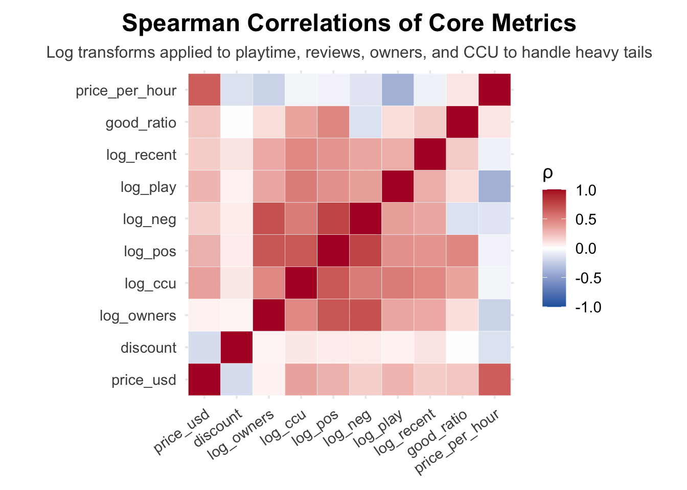
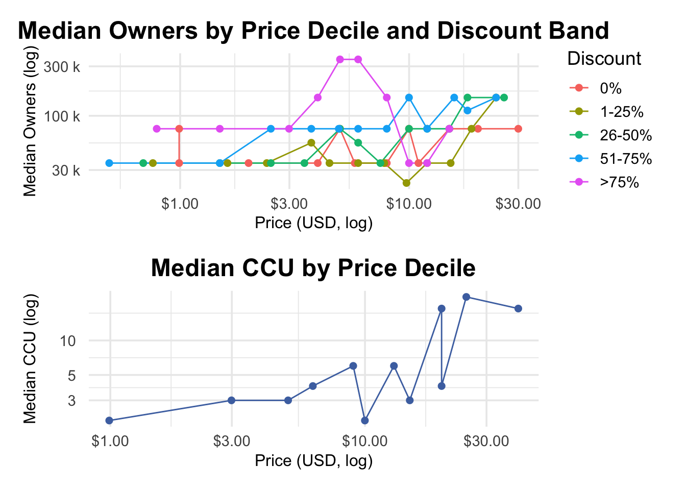
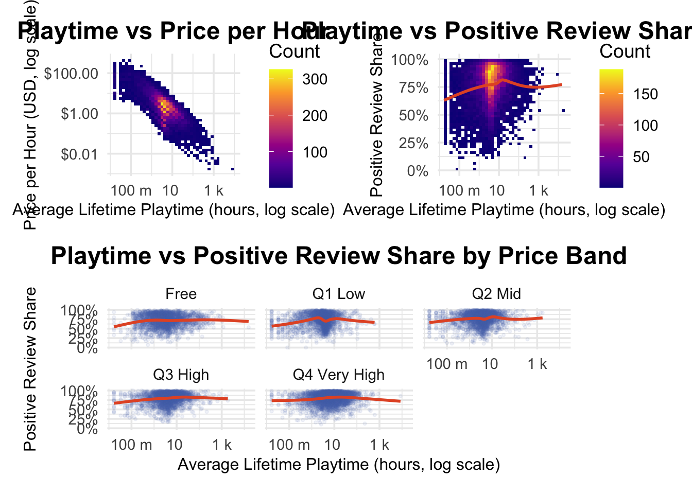
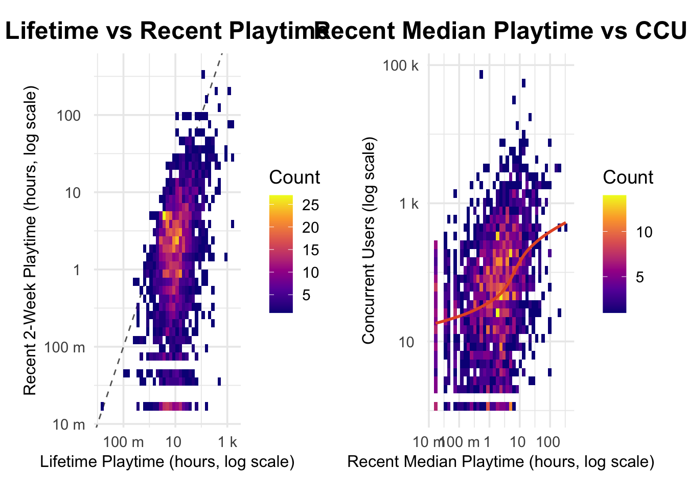
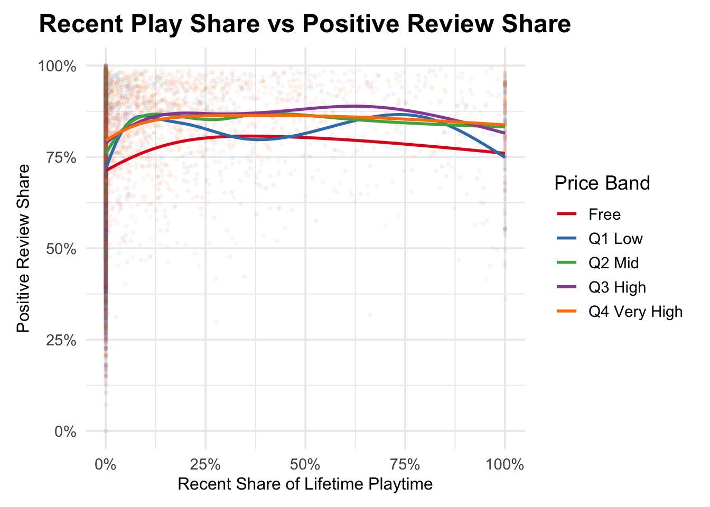
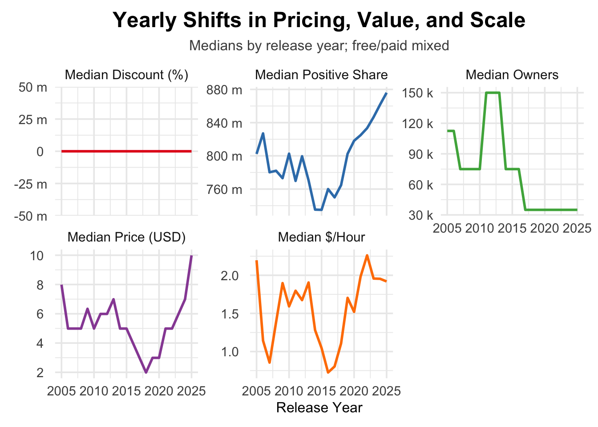
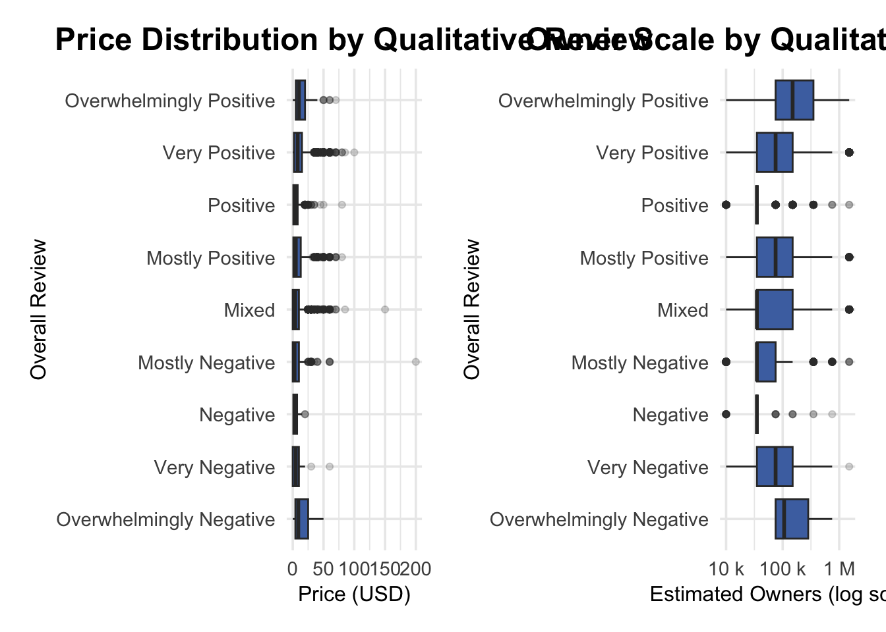
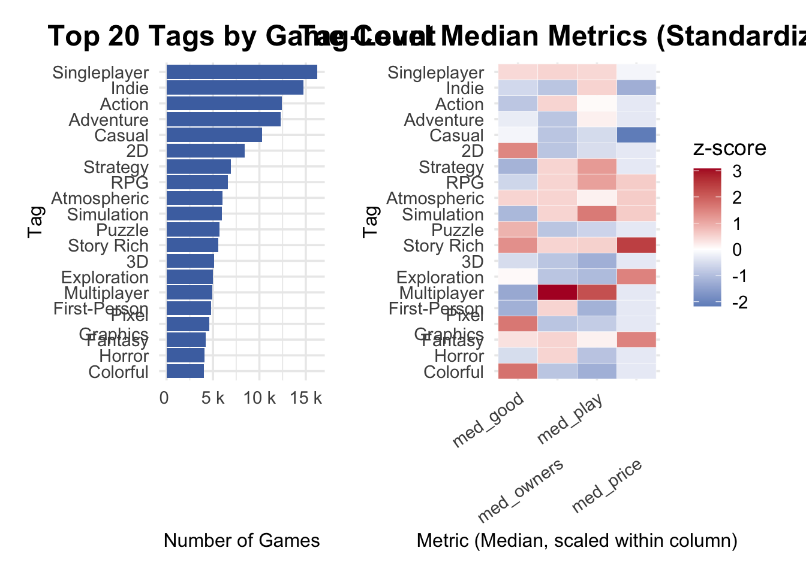

library(tidyverse)
library(lubridate)
library(scales)
library(patchwork)Relationship Analysis
We examine how pricing, playtime, engagement, reviews, ownership, release timing, and tags interact. All plots use consistent transformations to handle heavy-tailed distributions.
Setup and Data Preparation
theme_rel <- theme_minimal(base_size = 14) +
theme(
plot.title = element_text(face = "bold", size = 18, hjust = 0.5),
plot.subtitle = element_text(size = 12, hjust = 0.5, color = "gray30"),
axis.title = element_text(size = 12),
axis.text = element_text(size = 11),
plot.margin = margin(10, 12, 10, 12)
)
# Helper for wrapping/dodging long discrete labels to reduce overlaps
wrap_axis <- function(x, width = 12) stringr::str_wrap(x, width = width)
dodge_labels <- function(n = 2) guide_axis(n.dodge = n)raw <- readRDS("data/merged_data.rds")
owners_clean <- raw$owners %>%
str_replace_all("\\s*\\.\\.\\s*", " ~ ") %>% # normalize separator ".." to "~"
str_replace_all(",", "") # strip thousands separators
owners_split <- str_split_fixed(owners_clean, "\\s*~\\s*", 2)
owners_low <- as.numeric(owners_split[, 1])
owners_high <- as.numeric(owners_split[, 2])
rel <- raw %>%
mutate(
across(
c(
positive, negative, average_forever, average_2weeks,
median_forever, median_2weeks, price, initialprice,
discount, ccu
),
as.numeric
),
price_usd = price / 100,
initial_usd = initialprice / 100,
playtime_h = average_forever / 60,
recent_h = average_2weeks / 60,
median_forever_h = median_forever / 60,
median_recent_h = median_2weeks / 60,
good_ratio = if_else(positive + negative > 0,
positive / (positive + negative),
NA_real_),
net_reviews = positive - negative,
owners_low = owners_low,
owners_high = owners_high,
owners_mid = if_else(
!is.na(owners_low) & !is.na(owners_high),
(owners_low + owners_high) / 2,
NA_real_
),
owners_top = owners_high,
price_per_hour = if_else(
playtime_h > 0,
price_usd / pmax(playtime_h, 0.1),
NA_real_
),
release_date = mdy(release_date),
release_year = year(release_date),
disc_frac = discount / 100,
years_since_release = as.numeric(difftime(Sys.Date(), release_date, units = "days")) / 365.25,
release_cohort = case_when(
release_year <= 2015 ~ "2005-2015",
release_year <= 2019 ~ "2016-2019",
release_year > 2019 ~ "2020+",
TRUE ~ NA_character_
),
release_cohort = factor(
release_cohort,
levels = c("2005-2015", "2016-2019", "2020+")
),
recent_share = if_else(
playtime_h > 0 & recent_h >= 0,
pmin(recent_h / playtime_h, 1),
NA_real_
)
)
# Price bands (free plus quartiles for paid games)
paid_breaks <- quantile(
rel$price_usd[rel$price_usd > 0],
probs = seq(0, 1, 0.25),
na.rm = TRUE
)
rel <- rel %>%
mutate(
price_band = case_when(
price_usd == 0 ~ "Free",
price_usd > 0 ~ as.character(cut(
price_usd,
breaks = paid_breaks,
include.lowest = TRUE,
labels = c("Q1 Low", "Q2 Mid", "Q3 High", "Q4 Very High")
))
),
price_band = factor(
price_band,
levels = c("Free", "Q1 Low", "Q2 Mid", "Q3 High", "Q4 Very High")
)
)
glimpse(rel)Rows: 28,017
Columns: 38
$ appid <dbl> 921060, 490220, 1301720, 274520, 70000, 239200, 25…
$ name <chr> "Modern Combat 5", "Prismata", "Escape Room - Der …
$ developer <chr> "Gameloft", "Lunarch Studios", "Bitbeast Games", "…
$ publisher <chr> "Gameloft", "Lunarch Studios", "Bitbeast Games", "…
$ positive <dbl> 3130, 970, 9872, 20529, 12659, 7886, 13456, 15495,…
$ negative <dbl> 2595, 217, 2233, 1089, 2391, 3457, 2672, 3149, 23,…
$ owners <chr> "1,000,000 .. 2,000,000", "1,000,000 .. 2,000,000"…
$ average_forever <dbl> 277, 532, 98, 476, 225, 131, 566, 1085, 32, 570, 2…
$ average_2weeks <dbl> 0, 21, 25, 175, 1, 236, 226, 185, 0, 0, 1063, 0, 0…
$ median_forever <dbl> 51, 435, 82, 138, 127, 46, 366, 65, 61, 335, 551, …
$ median_2weeks <dbl> 0, 21, 25, 175, 1, 236, 226, 356, 0, 0, 1179, 0, 0…
$ price <dbl> 0, 0, 0, 1499, 999, 1999, 3999, 0, 499, 1499, 2499…
$ initialprice <dbl> 0, 0, 0, 1499, 999, 1999, 3999, 0, 499, 1499, 2499…
$ discount <dbl> 0, 0, 0, 0, 0, 0, 0, 0, 0, 0, 0, 0, 75, 0, 0, 0, 0…
$ ccu <dbl> 1, 6, 63, 86, 3, 10, 145, 993, 0, 21, 744, 124, 2,…
$ game_name <chr> "Modern Combat 5", "Prismata", "Escape Room - Der …
$ overall_review <chr> "Mixed", "Very Positive", "Mixed", "Overwhelmingly…
$ release_date <date> 2018-10-24, 2018-03-08, 2020-09-05, 2017-08-17, 2…
$ tags <chr> "Free to Play, FPS, Action, Shooter, Massively Mul…
$ price_usd <dbl> 0.00, 0.00, 0.00, 14.99, 9.99, 19.99, 39.99, 0.00,…
$ initial_usd <dbl> 0.00, 0.00, 0.00, 14.99, 9.99, 19.99, 39.99, 0.00,…
$ playtime_h <dbl> 4.6166667, 8.8666667, 1.6333333, 7.9333333, 3.7500…
$ recent_h <dbl> 0.00000000, 0.35000000, 0.41666667, 2.91666667, 0.…
$ median_forever_h <dbl> 0.8500000, 7.2500000, 1.3666667, 2.3000000, 2.1166…
$ median_recent_h <dbl> 0.00000000, 0.35000000, 0.41666667, 2.91666667, 0.…
$ good_ratio <dbl> 0.5467249, 0.8171862, 0.8155308, 0.9496253, 0.8411…
$ net_reviews <dbl> 535, 753, 7639, 19440, 10268, 4429, 10784, 12346, …
$ owners_low <dbl> 1e+06, 1e+06, 1e+06, 1e+06, 1e+06, 1e+06, 1e+06, 1…
$ owners_high <dbl> 2e+06, 2e+06, 2e+06, 2e+06, 2e+06, 2e+06, 2e+06, 2…
$ owners_mid <dbl> 1500000, 1500000, 1500000, 1500000, 1500000, 15000…
$ owners_top <dbl> 2e+06, 2e+06, 2e+06, 2e+06, 2e+06, 2e+06, 2e+06, 2…
$ price_per_hour <dbl> 0.0000000, 0.0000000, 0.0000000, 1.8894958, 2.6640…
$ release_year <dbl> 2018, 2018, 2020, 2017, 2011, 2013, 2020, 2020, 20…
$ disc_frac <dbl> 0.00, 0.00, 0.00, 0.00, 0.00, 0.00, 0.00, 0.00, 0.…
$ years_since_release <dbl> 7.129363, 7.759069, 5.262149, 8.314853, 14.674880,…
$ release_cohort <fct> 2016-2019, 2016-2019, 2020+, 2016-2019, 2005-2015,…
$ recent_share <dbl> 0.000000000, 0.039473684, 0.255102041, 0.367647059…
$ price_band <fct> Free, Free, Free, Q4 Very High, Q3 High, Q4 Very H…Correlation Snapshot Across Key Metrics
We use Spearman correlations on log-transformed heavy-tailed variables to reduce leverage from extreme hits.
corr_df <- rel %>%
transmute(
price_usd,
discount = disc_frac,
log_owners = log1p(owners_mid),
log_ccu = log1p(ccu),
log_pos = log1p(positive),
log_neg = log1p(negative),
log_play = log1p(playtime_h),
log_recent = log1p(recent_h),
good_ratio,
price_per_hour
) %>%
drop_na()
corr_mat <- cor(corr_df, method = "spearman")
corr_long <- as.data.frame(as.table(corr_mat)) %>%
rename(var_x = Var1, var_y = Var2, rho = Freq)
ggplot(
corr_long,
aes(x = var_x, y = var_y, fill = rho)
) +
geom_tile(color = "white") +
scale_fill_gradient2(
low = "#2166ac",
mid = "white",
high = "#b2182b",
midpoint = 0,
limits = c(-1, 1),
oob = squish
) +
coord_fixed() +
labs(
title = "Spearman Correlations of Core Metrics",
subtitle = "Log transforms applied to playtime, reviews, owners, and CCU to handle heavy tails",
x = NULL,
y = NULL,
fill = "ρ"
) +
theme_rel +
theme(axis.text.x = element_text(angle = 35, hjust = 1))
Highlights
- Core engagement and popularity metrics (playtime, recent play, owners, reviews, CCU) are highly collinear, indicating they all capture a shared underlying construct: overall game popularity, which suggests the need for feature reduction when building predictive models. - Positive and negative review counts are strongly correlated, showing that games with large player bases naturally accumulate both more praise and more criticism. - Price per hour shows weak negative correlations with engagement, implying that higher value-per-hour games tend to be played more, but the effect is modest. - Base price exhibits weak to moderate positive correlations with popularity indicators, consistent with larger, premium titles attracting more players despite higher cost. - Discount level shows minimal correlation with engagement or popularity, indicating that simple discount status is not a strong predictor in cross-sectional data.
Pricing, Demand, and Discount Effects
# Median trend based on price percentiles and discount tiers
price_bins <- rel %>%
filter(price_usd > 0, owners_mid > 0, discount >= 0) %>%
mutate(price_bin = ntile(price_usd, 12),
disc_band = cut(discount, breaks = c(-Inf, 0, 25, 50, 75, Inf),
labels = c("0%", "1-25%", "26-50%", "51-75%", ">75%")))
p_price_owner_med <- price_bins %>%
group_by(price_bin, disc_band) %>%
summarise(
med_price = median(price_usd),
med_owners = median(owners_mid),
.groups = "drop"
) %>%
ggplot(aes(med_price, med_owners, color = disc_band)) +
geom_line() + geom_point(size = 2) +
scale_x_log10(labels = dollar_format()) +
scale_y_log10(labels = label_number(scale_cut = cut_si(""))) +
labs(title = "Median Owners by Price Decile and Discount Band",
x = "Price (USD, log)", y = "Median Owners (log)", color = "Discount") +
theme_rel
p_price_ccu_med <- rel %>%
filter(price_usd > 0, ccu > 0) %>%
mutate(price_bin = ntile(price_usd, 12)) %>%
group_by(price_bin) %>%
summarise(med_price = median(price_usd), med_ccu = median(ccu), .groups = "drop") %>%
ggplot(aes(med_price, med_ccu)) +
geom_line(color = "#4C72B0") + geom_point(color = "#4C72B0", size = 2) +
scale_x_log10(labels = dollar_format()) +
scale_y_log10(labels = label_number(scale_cut = cut_si(""))) +
labs(title = "Median CCU by Price Decile", x = "Price (USD, log)", y = "Median CCU (log)") +
theme_rel
p_price_owner_med / p_price_ccu_med
Notes
- Higher-priced games show much higher median CCU, indicating that premium titles tend to sustain stronger active playerbases. - Median owners do not decline with price; mid- to high-price games often have more owners than low-price titles, contradicting the assumption that cheaper games attract larger audiences. - Deeply discounted games (>75%) exhibit the highest median owners, suggesting that major discounts are primarily used by already successful, large-audience titles rather than driving popularity on their own. - For very low-priced games, discounts make little difference, as all discount bands converge to similar ownership levels.
Perceived Value: Playtime, Cost Efficiency, and Sentiment
p_value <- rel %>%
filter(playtime_h > 0, price_per_hour > 0) %>%
ggplot(aes(playtime_h, price_per_hour)) +
geom_bin2d(bins = 40) +
scale_x_log10(labels = label_number(scale_cut = cut_si(""))) +
scale_y_log10(labels = dollar_format()) +
scale_fill_viridis_c(option = "C") +
labs(
title = "Playtime vs Price per Hour",
x = "Average Lifetime Playtime (hours, log scale)",
y = "Price per Hour (USD, log scale)",
fill = "Count"
) +
theme_rel
p_play_sentiment <- rel %>%
filter(playtime_h > 0, !is.na(good_ratio)) %>%
ggplot(aes(playtime_h, good_ratio)) +
geom_bin2d(bins = 40) +
geom_smooth(
method = "gam",
formula = y ~ s(x, bs = "cs"),
color = "#e4572e",
se = FALSE
) +
scale_x_log10(labels = label_number(scale_cut = cut_si(""))) +
scale_y_continuous(labels = percent_format(accuracy = 1)) +
scale_fill_viridis_c(option = "C") +
labs(
title = "Playtime vs Positive Review Share",
x = "Average Lifetime Playtime (hours, log scale)",
y = "Positive Review Share",
fill = "Count"
) +
theme_rel
p_facet_price <- rel %>%
filter(playtime_h > 0, !is.na(good_ratio)) %>%
ggplot(aes(playtime_h, good_ratio)) +
geom_point(
alpha = 0.08,
size = 0.8,
color = "#4C72B0"
) +
geom_smooth(
method = "gam",
formula = y ~ s(x, bs = "cs"),
color = "#e4572e",
se = FALSE
) +
scale_x_log10(labels = label_number(scale_cut = cut_si(""))) +
scale_y_continuous(labels = percent_format(accuracy = 1)) +
facet_wrap(~price_band, ncol = 3) +
labs(
title = "Playtime vs Positive Review Share by Price Band",
x = "Average Lifetime Playtime (hours, log scale)",
y = "Positive Review Share"
) +
theme_rel
(p_value | p_play_sentiment) / p_facet_price
Notes
- Price per hour drops sharply as average playtime increases, reflecting higher percieved value in long-engagement titles. - Positive review share peaks at moderate playtime levels, suggesting a satisfaction “sweet spot” before long-term fatigue sets in. - Across all price bands, sentiment patterns are similar, with the highest positivity at mid-range playtimes and slight declines at very low or very high playtimes levels.
Activity and Retention
p_recent <- rel %>%
filter(playtime_h > 0, recent_h > 0) %>%
ggplot(aes(playtime_h, recent_h)) +
geom_abline(
slope = 1,
intercept = 0,
linetype = "dashed",
color = "gray40"
) +
geom_bin2d(bins = 40) +
scale_x_log10(labels = label_number(scale_cut = cut_si(""))) +
scale_y_log10(labels = label_number(scale_cut = cut_si(""))) +
scale_fill_viridis_c(option = "C") +
labs(
title = "Lifetime vs Recent Playtime",
x = "Lifetime Playtime (hours, log scale)",
y = "Recent 2-Week Playtime (hours, log scale)",
fill = "Count"
) +
theme_rel
p_ccu_retention <- rel %>%
filter(median_recent_h > 0, ccu > 0) %>%
ggplot(aes(median_recent_h, ccu)) +
geom_bin2d(bins = 40) +
geom_smooth(
method = "gam",
formula = y ~ s(x, bs = "cs"),
color = "#e4572e",
se = FALSE
) +
scale_x_log10(labels = label_number(scale_cut = cut_si(""))) +
scale_y_log10(labels = label_number(scale_cut = cut_si(""))) +
scale_fill_viridis_c(option = "C") +
labs(
title = "Recent Median Playtime vs CCU",
x = "Recent Median Playtime (hours, log scale)",
y = "Concurrent Users (log scale)",
fill = "Count"
) +
theme_rel
p_recent | p_ccu_retention
Notes
- Recent 2-week playtime is positively correlated with lifetime playtime, indicating that long-time players tend to stay active. - Games with higher recent median playtime generally have more concurrent users, suggesting that more “sticky” games attract larger active populations. - Warmer colors mark where most games cluster at moderate playtime and moderate CCU.
# Retention ratio vs sentiment to identify churn vs delight pockets
p_retention_sentiment <- rel %>%
filter(!is.na(recent_share), !is.na(good_ratio)) %>%
ggplot(aes(recent_share, good_ratio, color = price_band)) +
geom_point(alpha = 0.05, size = 0.8) +
geom_smooth(
method = "gam",
formula = y ~ s(x, bs = "cs"),
se = FALSE,
size = 1
) +
scale_x_continuous(labels = percent_format(accuracy = 1)) +
scale_y_continuous(labels = percent_format(accuracy = 1)) +
scale_color_brewer(palette = "Set1") +
labs(
title = "Recent Play Share vs Positive Review Share",
x = "Recent Share of Lifetime Playtime",
y = "Positive Review Share",
color = "Price Band"
) +
theme_relWarning: Using `size` aesthetic for lines was deprecated in ggplot2 3.4.0.
ℹ Please use `linewidth` instead.p_retention_sentiment
Notes
- Across all price bands, positive review share remains consistently high (roughly 75–90%) with only modest variation as recent play share changes. - A slight increase appears in the mid-range of recent play share, but overall the curves remain fairly flat, indicating a weak relationship. - Free titles tend to show lower positive review shares, while higher-priced games (Q3/Q4) maintain more stable and slightly higher ratings across the full range.
Release Timing vs Pricing, Value, and Demand
yearly <- rel %>%
filter(!is.na(release_year), release_year >= 2005, release_year <= year(Sys.Date())) %>%
group_by(release_year) %>%
summarise(
n = n(),
med_price = median(price_usd, na.rm = TRUE),
med_discount = median(discount, na.rm = TRUE),
med_good = median(good_ratio, na.rm = TRUE),
med_owners = median(owners_mid, na.rm = TRUE),
med_price_per_hour = median(price_per_hour, na.rm = TRUE),
.groups = "drop"
) %>%
pivot_longer(
cols = c(med_price, med_discount, med_good, med_owners, med_price_per_hour),
names_to = "metric",
values_to = "value"
)
metric_labels <- c(
med_price = "Median Price (USD)",
med_discount = "Median Discount (%)",
med_good = "Median Positive Share",
med_owners = "Median Owners",
med_price_per_hour = "Median $/Hour"
)
ggplot(yearly, aes(release_year, value, color = metric)) +
geom_line(size = 1) +
facet_wrap(~metric, scales = "free_y", labeller = as_labeller(metric_labels)) +
scale_y_continuous(labels = label_number(scale_cut = cut_si(""))) +
scale_color_manual(values = RColorBrewer::brewer.pal(5, "Set1"), guide = "none") +
labs(
title = "Yearly Shifts in Pricing, Value, and Scale",
subtitle = "Medians by release year; free/paid mixed",
x = "Release Year",
y = NULL
) +
theme_rel
Notes
- The median discount remains at 0%, suggesting that most games do not rely on discounting strategies. - The positive review share fluctuates in earlier years but rises noticeably in recent years, indicating stronger reception for newer releases. - Median owner counts peak around 2012–2014 and decline afterward. - Both price and price-per-hour show a dip followed by a rise, with recent games becoming more expensive while also delivering higher hourly value.
Sentiment Structure and Review Volume
review_levels <- c(
"Overwhelmingly Negative", "Very Negative", "Negative",
"Mostly Negative", "Mixed", "Mostly Positive", "Positive",
"Very Positive", "Overwhelmingly Positive"
)
review_df <- rel %>%
filter(!is.na(overall_review)) %>%
mutate(
is_numeric = str_detect(overall_review, "^\\d"),
overall_review = factor(overall_review, levels = review_levels, ordered = TRUE)
) %>%
filter(!is_numeric)
p_price_review <- review_df %>%
ggplot(aes(overall_review, price_usd)) +
geom_boxplot(outlier.alpha = 0.2, fill = "#4C72B0") +
coord_flip() +
labs(
title = "Price Distribution by Qualitative Review",
x = "Overall Review",
y = "Price (USD)"
) +
theme_rel
p_owner_review <- review_df %>%
filter(owners_mid > 0) %>%
ggplot(aes(overall_review, owners_mid)) +
geom_boxplot(outlier.alpha = 0.2, fill = "#4C72B0") +
scale_y_log10(labels = label_number(scale_cut = cut_si(""))) +
coord_flip() +
labs(
title = "Owner Scale by Qualitative Review",
x = "Overall Review",
y = "Estimated Owners (log scale)"
) +
theme_rel
p_price_review | p_owner_review
Notes
- Price varies little across review categories; cheap titles dominate every rating tier. Review quality does not show a meaningful relationship with game price. - Extremely positive and extremely negative games both include some large-audience titles, while mid-tier positive and negative games tend to have smaller player bases.
Tag-Level Contrasts
tag_summary <- rel %>%
filter(!is.na(tags)) %>%
separate_rows(tags, sep = ",") %>%
mutate(tag = str_trim(tags)) %>%
filter(tag != "+") %>%
group_by(tag) %>%
summarise(
n = n(),
med_price = median(price_usd, na.rm = TRUE),
med_good = median(good_ratio, na.rm = TRUE),
med_owners = median(owners_mid, na.rm = TRUE),
med_play = median(playtime_h, na.rm = TRUE),
.groups = "drop"
) %>%
arrange(desc(n)) %>%
slice_head(n = 20) %>%
mutate(tag = fct_reorder(tag, n))
tag_heat <- tag_summary %>%
mutate(across(c(med_price, med_good, med_owners, med_play), scale)) %>%
pivot_longer(
cols = c(med_price, med_good, med_owners, med_play),
names_to = "metric",
values_to = "z"
)
p_tag_counts <- ggplot(tag_summary, aes(tag, n)) +
geom_col(fill = "#4C72B0") +
coord_flip() +
scale_x_discrete(labels = wrap_axis) +
scale_y_continuous(labels = label_number(scale_cut = cut_si(""))) +
labs(
title = "Top 20 Tags by Game Count",
x = "Tag",
y = "Number of Games"
) +
theme_rel
p_tag_heat <- ggplot(tag_heat, aes(metric, tag, fill = z)) +
geom_tile(color = "white") +
scale_fill_gradient2(
low = "#2166ac", mid = "white", high = "#b2182b", midpoint = 0
) +
scale_x_discrete(guide = dodge_labels(2)) +
scale_y_discrete(labels = wrap_axis) +
labs(
title = "Tag-Level Median Metrics (Standardized)",
x = "Metric (Median, scaled within column)",
y = "Tag",
fill = "z-score"
) +
theme_rel +
theme(axis.text.x = element_text(angle = 35, hjust = 1))
p_tag_counts | p_tag_heat
Notes
- High-frequency tags are not the strongest performers. Tags like Singleplayer, Indie, and Action appear most often, but their median owners, playtime, and price sit close to the overall average. Prevalence does not imply higher commercial or engagement performance. - Multiplayer stands out as a scale and engagement driver. It shows the highest median owners and playtime among all top tags, indicating strong reach and long-term engagement, even though its median review scores are not exceptional. - Narrative- and depth-oriented tags command higher value. Story Rich, RPG, Strategy, and Fantasy are associated with higher median playtime and higher pricing, suggesting a segment of durable, content-heavy titles that sustain player investment. - 2D, Pixel Graphics, and Colorful represent the “low price, high satisfaction” cluster. These tags show lower pricing but above-average review scores, aligning with smaller-scale, lower-cost titles that reliably deliver strong player sentiment. - Casual and Puzzle titles skew toward short-session experiences. They appear frequently but show lower median playtime and pricing, reflecting lighter engagement patterns compared to heavier narrative or multiplayer genres.